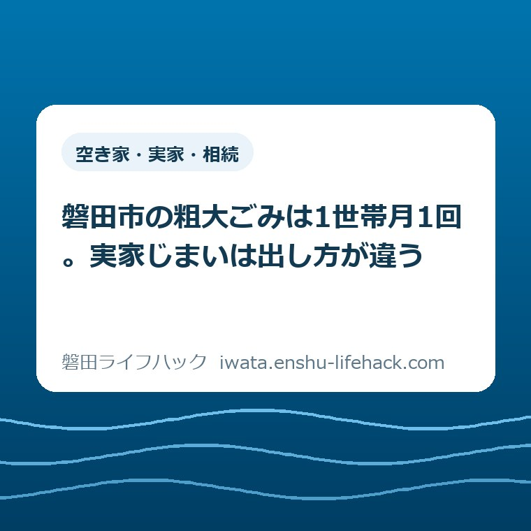

空き家・実家・相続
磐田市の粗大ごみは1世帯月1回。実家じまいは出し方が違う

この記事の要点
Q. 実家を片付けることになりました。磐田市の粗大ごみは、まとめて出せますか？
A. まとめては出せません。磐田市の粗大ごみ戸別収集は原則1世帯につき月1回で、「引っ越しや解体などによる大量のごみは収集できません」と明記されています（2026年8月28日確認）。遺品整理で大量に出る分は、令和5年4月に始まった民間許可業者による有料戸別収集が別枠です。
導入——実家の片付けは、いつもの粗大ごみの枠に入らない
磐田市で親の家を片付けることになった方から最初に聞かれるのは、たいてい「粗大ごみはどうやって出すのか」です。ところが磐田市の粗大ごみ戸別収集には「原則として1世帯につき月1回の利用に限ります」という条件があり、同じページに「引っ越しや解体などによる大量のごみは収集できません」と書かれています（磐田市「粗大ごみの戸別収集」2026年8月28日確認）。
つまり、日常の粗大ごみと、家一軒を空にするときの粗大ごみは、磐田市の側で最初から別の扱いになっています。同じ「粗大ごみ」という言葉を使っていても、通る窓口が違います。この一点を知らないまま片付けを始めると、月に一度の収集を待ちながら家財の山を眺めることになります。
この記事は、磐田市が公表している数字と条件を、家一軒を片付ける側の段取りに置き換えて整理したものです。手続きそのものの一覧や施設の基本情報は、当サイトの粗大ごみの持ち込み・処理をまとめたページにあります。ここでは、そこに書ききれない「量が多いときにどう分かれるか」を扱います。
私は磐田市で不動産業をしています。実家じまいの相談では、片付けの見通しが立たないまま数か月が過ぎることが珍しくありません。ごみの出し方は、その最初のつまずきになりやすい部分です。

まず、公式資料から事実を整理する
磐田市の粗大ごみ戸別収集は、事前予約制の有料サービスです。市の「粗大ごみの戸別収集」のページ（2026年4月24日更新）には、集積所に出せない大きなごみを運搬する手段のない家庭に、有料で家まで回収に行く仕組みだと書かれています。
収集できるのは「一番長い部分が2m以内で重さが80㎏以下のもののうち、市で回収できるもの」です。家電リサイクル法の対象品目は、この枠とは別の扱いになります。なお「何センチ以上が粗大ごみか」という下限は、磐田市のページには示されていません。示されているのは上限だけです。
料金は基本料金1,040円に、収集物1個につき210円が加算されます。磐田市はページに計算例を載せていて、収集物4品なら1,040円＋（210円×4個）＝1,880円です。支払いは現金またはPayPayで、現金はおつりのないように事前に用意するよう案内されています。
家電リサイクル法の対象品を含む場合は、1個につき1,100円の運搬料と家電リサイクル券が別に必要です。磐田市の計算例では、対象品2点と対象外1点で1,040円＋（210円×3個）＋（1,100円×2個）＝3,870円と、リサイクル券2枚になります。
申し込み先は、ごみ資源循環課の資源循環推進グループ（電話0538-37-4812、受付は平日午前8時30分から午後5時15分）か、磐田市公式LINEの電子申請です。収集日は月曜から金曜まで、祝日と年末年始を除きます。
時間の条件は二つ書かれています。「原則として希望日の2週間前までにお申し込みください」、そして「予約状況により希望の日程に添えない場合があります。（3週間から1か月程度先のご予約となることがあります。）」です。
磐田市の「粗大ごみ戸別収集のLINE申請」のページ（2026年5月27日更新）には、さらに踏み込んだ記載があります。「粗大ごみの申し込みから収集まで、時期によっては1カ月以上かかる場合があります。余裕をもって申し込みください。特に、年末や年度末は、粗大ごみの申し込みが増加しますのでご注意ください。」
費用の免除もあります。身体障がい者手帳の1級から3級までの交付を受けている方のみの世帯、または70歳以上の方のみの世帯（いずれも世帯分離を除く）は、民生委員の確認を得れば基本料金1,040円が免除されます。事前に、民生委員が署名または記名押印した減免申請書を用意しておく必要があります。
「原則1世帯月1回」が、片付けの段取りに効いてくる
実家じまいの側から見ると、いちばん効いてくる条件は料金ではありません。「原則として1世帯につき月1回」という頻度の条件です。家一軒分の家財は、1回の収集では終わりません。
仮に、家具・寝具・小型家電を含めて粗大ごみが20品出たとします。磐田市の計算式に当てはめれば1,040円＋（210円×20個）＝5,240円です。これは私が公表されている単価から計算した値であり、磐田市が示している例ではありません。金額だけを見れば、驚くほどの負担ではないはずです。
問題は回数のほうです。1回の収集で何個まで出せるのかは、磐田市のページには書かれていません。示されているのは、1点ごとの長さ2m・重さ80㎏という上限と、月1回という頻度だけです。ここは私にも読み取れませんでした。電話で確認するしかない部分だと考えています。
もし1回に出せる量が限られていて、それが月1回であれば、家一軒を空にするのに何か月もかかる計算になります。相続した家を売る予定があるなら、その間ずっと固定資産税と管理の手間が続きます。片付けの遅れは、そのまま保有コストの延長です。
そして磐田市は、そもそも大量のごみを想定していません。「引っ越しや解体などによる大量のごみは収集できません」「お急ぎの場合は、民間許可業者（有料）へお問合せください」というのが、粗大ごみの戸別収集のページに書かれている内容です。言い切ってしまえば、実家じまいで出る粗大ごみは、市の戸別収集の想定の外にあります。
令和5年4月に始まった、大量向けの別枠
磐田市には、遺品整理や引っ越しで一度に大量に出る粗大ごみのための別のルートがあります。「民間許可業者による有料粗大ごみ戸別収集」で、開始時期は令和5年4月1日（2023年4月1日）です（磐田市の同名ページ、2026年4月24日更新／2026年8月28日確認）。
磐田市のページには「引越しや遺品整理で発生した多量の粗大ごみ等を処理施設に自己搬入できない方を対象に、磐田市が許可した一般廃棄物収集運搬許可業者が、有料で本人に代わって処分を行います」と書かれています。遺品整理という言葉が磐田市の公式ページに出てくるのは、私が見た限りこのページだけです。
依頼先は市の許可業者です。磐田市は「磐田市一般廃棄物収集運搬（家庭系）許可業者一覧」をPDFで公開していて、そこに載っている事業者へ直接連絡する形になります。市が申し込みを取りまとめるわけではありません。
料金については「取扱業者により異なりますので、直接事業者に確認してください」と書かれているだけです。市の戸別収集のように、単価が公表されているわけではありません。
ここは正直に言えば、使う側から見て見通しの悪い部分です。市が許可した業者だと分かっても、いくらかかるかは電話をかけるまで分かりません。私は、複数社に見積もりを取ることを前提に日程を組むようにしています。1社目の金額が高いのか安いのか、比べる相手がなければ判断できないからです。

市が受け取らないものを、先に抜いておく
片付けを始める前に切り分けておくべきなのは、磐田市がそもそも受け取らないものです。磐田市は「磐田市廃棄物の減量及び適正処理に関する条例（平成17年4月1日条例第156号）第21条第1項」の規定に基づき、適正処理困難物を指定しています。
適正処理困難物は、市では収集も処理もできず、市が所有する一般廃棄物処理施設への持ち込みもできません。並んでいるのは、実家によくあるものばかりです。プロパンガスボンベ（家庭用カセットボンベを除く）、ガソリン・灯油・オイル、機械油、バッテリー、消火器、農薬などの薬品、注射針などが挙げられています。
見落とされやすいのが、弦が張ってあるピアノ、太陽光パネル、石膏ボード、自動車や自動二輪車の解体部品（タイヤ、ホイール、ドア、マフラー、燃料タンク等）です。物置と納屋にこの手のものが眠っている家は、磐田市内でも珍しくありません。私が現地を見に行って予定が狂うのは、たいてい母屋ではなく物置のほうです。
家電リサイクル法の対象品目も別ルートになります。テレビ（液晶・ブラウン管・プラズマ・有機EL）、冷蔵庫・冷凍庫、洗濯機・衣類乾燥機、エアコン（室外機含む）の4区分は、ごみ集積所にも磐田市の施設にも出せません。平成13年4月1日に施行された家電リサイクル法に基づく扱いです。
磐田市が示す料金の目安は、テレビが15型以下で1,870円・16型以上で2,970円、冷蔵庫と冷凍庫が170リットル以下で3,740円・171リットル以上で4,730円、エアコン（室外機含む）が990円、洗濯機と衣類乾燥機が2,530円です。メーカーや大きさで変わるため、家電リサイクル券センター（0120-319640、月曜から土曜の午前9時から午後6時、祝日を除く）へ問い合わせるよう案内されています。
実家に古いテレビが2台、冷蔵庫が1台、洗濯機が1台あるだけで、目安の合計は1万円を超えます。ここに戸別収集を使えば、1個あたり1,100円の運搬料と210円の品物代が上乗せされます。家財の量ではなく、家電の台数で最初の予算が決まる家は多いはずです。
自分で運ぶなら、施設は二つに分かれる
運搬手段がある場合、磐田市は自己搬入をすすめています。粗大ごみの戸別収集のページにも、運搬手段のある方はなるべく自己搬入するように書かれています。搬入先は、燃えるものと燃えないもので二つに分かれます。
布団・木製家具・畳・草木枝など燃えるものは、磐田市クリーンセンター（磐田市刑部島301）です。手数料はごみの重量10㎏あたり157円で、支払いは現金のみ。受付は月曜から金曜が午前8時30分から午後4時15分、第2・第4日曜日と祝日が午前8時30分から午後0時45分です。ただし祝日が土曜日、第1・第3・第5日曜日にあたる場合は休場になります。
クリーンセンターには細かい条件が付いています。長さは2m以内、木枝は直径20㎝以内、畳は1日20枚まで。搬入は原則1日2回まで、車両は最大積載量3トン以下に限られます。金属やガラス、鏡は外して持ち込みます。搬入できるのは磐田市内から出たごみに限られ、確認のため運転免許証の提示を求められる場合があります。
金属製品・小型電化製品・電池・蛍光管・ガラス・陶器・ブロックなど燃えないものは、中遠広域粗大ごみ処理施設（磐田市新貝59-1）です。受付は午前9時から正午、午後1時から午後4時30分で、土曜・日曜・祝日・年末年始は休みです。
この施設の手数料は、ごみの量ではなく車両の最大積載重量で決まります。0.5トン以下の軽自動車や乗用車が1台につき520円、0.5トンを超え1.0トン以下が1,040円、1.0トンを超え1.5トン以下が1,570円、1.5トンを超え2.0トン以下が2,090円です。搬入車両は2トン車以下に限られます。
この料金の決まり方は、片付ける側の動き方を変えます。軽トラック1台で520円なら、荷台を満載にするほど1点あたりの負担は下がります。半端な量で往復すれば、そのたびに520円ずつ積み上がります。積み方が費用に直結する料金体系です。
実家の片付けでは、いつのまにか「軽トラック1台分」が数え方の単位になります。畳は1日20枚まで、搬入は1日2回までという条件は、その単位で動く人にとって現実的な制約です。畳の枚数が多い日本家屋なら、そこだけで1日が終わります。
なお、引っ越しにともなう片付けの手順は、当サイトの転出にともなう粗大ごみ・片付けのページにも整理してあります。実家じまいと転出が同じ時期に重なる家もあるので、両方を並べて見ておくと抜けが減ります。
評価——良い点と、注文したい点
良い点は三つあります。第一に、料金の計算式と計算例の両方が載っていることです。基本料金1,040円＋1個210円という式に加えて、4品で1,880円、家電を含む3品で3,870円という具体例が並んでいます。式だけ書いて読者に計算させる形になっていません。
第二に、待ち時間を隠していないことです。「2週間前まで」と書いた上で、「3週間から1か月程度先のご予約となることがあります」「時期によっては1カ月以上かかる場合があります」と重ねて書いてあります。年末と年度末が混むという注意まで添えられています。行政の案内としては手厚いほうだと私は見ています。
第三に、大量に出る場合の行き先が用意されていることです。令和5年4月1日から、市の許可業者による有料の戸別収集が別枠として案内されています。「うちでは収集できません」で終わらせず、次にどこへ行けばよいかを示している点は評価できます。断り方に出口が付いているかどうかは、使う側にとって大きな差です。
その上で、注文したい点も二つあります。一つは、1回の収集で何個まで出せるのかが書かれていないことです。1点ごとの長さと重さの上限、月1回という頻度は明記されていますが、1回あたりの量の上限が見当たりません。ここが分からないと、家一軒分の片付けに何か月かかるのかを見積もれません。
もう一つは、民間許可業者の料金の目安が示されていないことです。「取扱業者により異なります」は事実だと思いますが、市の戸別収集が1,040円＋210円と明示されているのと比べると、片方だけ暗いままです。過去の実績の幅でも示されていれば、遠方から片付けに来る相続人が予算を立てられます。これは仕組みへの注文であって、窓口の担当者への注文ではありません。
対案・結論——最初にやるのは仕分けではなく、線引き
実家の片付けで最初にやるべきなのは、家財を細かく分別することではありません。「市に出せるもの」「市に出せないもの」「そもそも捨てなくていいもの」の三つに線を引くことです。線が引ければ、費用も日数も後から計算できます。
市に出せないものは、量が少なくても先に洗い出します。プロパンガスボンベ、灯油、バッテリー、消火器、弦の張ったピアノ、太陽光パネル、石膏ボード。これらは購入店や専門の業者へ個別に相談する必要があり、見つかるのが遅いほど日程が崩れます。最終日に物置から出てくるのが、いちばん困ります。
家電リサイクル法の4区分も、早い段階で台数を確定させます。テレビ・冷蔵庫・洗濯機・エアコンが何台あるかで、必要な家電リサイクル券の枚数と、どのルートで出すかが決まります。台数が決まれば、目安料金から概算が出せます。
そのうえで、残りの量を見て市の戸別収集で足りるかを判断します。月1回という頻度で終わる量なら市のルート、終わらない量なら令和5年4月に始まった民間許可業者のルートです。分かれ目は品数そのものではなく、期限があるかどうかだと私は考えています。売却や解体の日程が決まっているなら、待つ選択は取れません。
期限が決まっていないなら、急いで結論を出す必要はありません。今日の成果は、家電の台数と、市が受け取らないものの一覧が手元にできた状態で十分です。実家をどうするかという全体の判断は、空き家・実家じまい・相続した家をまとめたページと、親の家の片付けをごみ・相続・空き家に分けて整理したページを見比べてから決めても遅くありません。売るか解体するかまで考えが進んだら、磐田市の空き家バンクと空き家おこしプロジェクトの違いを整理した記事で、どの窓口に当たるかを先に確かめておくと無駄がありません。
確認する順番
- 家の中と物置を一周し、家電リサイクル法の4区分（テレビ・冷蔵庫／冷凍庫・洗濯機／衣類乾燥機・エアコン）の台数を数える。
- ガスボンベ、灯油、オイル、バッテリー、消火器、ピアノ、太陽光パネル、石膏ボード、農薬がないかを確認し、あれば別のメモに分ける。
- 残った粗大ごみを、長さ2m・重さ80㎏の枠に収まるものと、収まらないものに分ける。
- 売却や解体の期限があるかを確認する。期限があるなら、市の許可業者一覧から複数社に見積もりを依頼する。
- 期限がなく量も少ないなら、ごみ資源循環課（0538-37-4812）へ電話し、1回に出せる個数と直近の予約状況を確かめてから申し込む。
家族で共有するための記録
片付けは一人では終わりません。だからこそ、確認した内容は頭の中に置かず、一枚の紙か共有できるファイルに残してください。家電の台数、市が受け取らないものの一覧、粗大ごみのおおよその品数。この三つが並んでいれば、離れて住むきょうだいにも状況が伝わります。
費用の見込みも同じ紙に書いておきます。家電リサイクル料金の目安、戸別収集を使った場合の概算、業者見積もりの金額。数字が並んでいると、誰が何を負担するかの話が進めやすくなります。金額をぼかしたままでは、話し合いは止まります。
確認日も必ず書き添えてください。手数料も受付時間も変わります。今日確認したという事実が残っていれば、次に見直すときに何を読み直せばよいかがすぐ分かります。この記事の数字も、2026年8月28日時点のものです。
もう一つ、実家までの距離と所要時間も記録しておくと役に立ちます。磐田市は南北27.1キロある市で、住む場所によって施設までの往復時間はまったく違います。市役所と四つの支所から暮らしの距離を測った記事にも書きましたが、自己搬入を何往復できるかは、この距離で決まります。
大石の視点
ここから先は、私が磐田市で不動産の相談を受けてきた立場からの見解です。特定の家庭の体験談ではなく、意見として読んでください。体験として書けるだけの一場面が手元にないので、そこは正直に断っておきます。
実家じまいの相談で、片付けが止まる理由の多くは、量の多さそのものではありません。「どこに持っていけばいいのか分からないものが数点ある」ことで、全体が動かなくなります。ガスボンベ1本、ピアノ1台。それだけで手が止まる場面を何度も見てきました。
だから私は、市の戸別収集を使うか業者に頼むかを決める前に、市が受け取らないものを先に抜くことをすすめています。順番を逆にすると、全部運び終えたつもりで最後に困ります。
磐田市の案内について、私が引っかかっているのは、金額の見え方が二つのルートで揃っていないことです。市のルートは1,040円＋210円と1円単位まで分かるのに、遺品整理向けのルートは業者ごとで真っ暗になります。急いでいる人ほど後者を使うのに、急いでいる人ほど比較する時間がない。この非対称は、もう少し埋められるはずだと思っています。
それでも、令和5年4月に大量向けの受け皿を別枠で用意したこと自体は、現場の実感に合っています。市の収集能力で家一軒分を引き受けるのは無理があり、そこを民間に開いたのは筋が通った判断です。行政に注文を付ける前に、自分の商売で同じことができるかを考える。私はいつもそこから始めます。
今日、片付けの全部を決める必要はありません。家電の台数を数えて、物置を一度開けて、市が受け取らないものを紙に書き出す。それだけでも、次に電話をかけるときの中身が変わります。判断の材料が一つ増えた状態で止めておいて、構わないと思います。
まとめ
磐田市の粗大ごみ戸別収集は、基本料金1,040円に収集物1個につき210円で、原則として1世帯につき月1回です。申し込みは希望日の2週間前までとされ、時期によっては収集まで1か月以上かかることがあります。
実家じまいのように一度に大量に出る場合は、この枠には収まりません。令和5年4月1日に始まった民間許可業者による有料粗大ごみ戸別収集が、引越しや遺品整理を明示的な対象にしています。料金は業者ごとに違うので、複数社に当たってください。
- 市の戸別収集は原則1世帯月1回。「引っ越しや解体などによる大量のごみは収集できません」と明記されている。
- 遺品整理・引越しの多量分は、令和5年4月1日開始の民間許可業者による有料戸別収集が別枠。料金は業者ごとで市は目安を公表していない。
- 家電リサイクル法の4区分と適正処理困難物（ガスボンベ・灯油・バッテリー・ピアノ・太陽光パネル・石膏ボード等）は、市の集積所にも施設にも出せない。先に抜く。
よくある質問
磐田市の粗大ごみ戸別収集は、実家の片付けで一度にたくさん出せますか。
できません。磐田市の粗大ごみ戸別収集は「原則として1世帯につき月1回の利用に限ります」とされ、同じページに「引っ越しや解体などによる大量のごみは収集できません」と書かれています（2026年8月28日確認）。1回に出せる個数の上限はページに記載がないため、量が多い場合はごみ資源循環課（0538-37-4812）へ確認してください。
遺品整理で大量に出た粗大ごみは、磐田市ではどこに頼めばよいですか。
磐田市は令和5年4月1日から「民間許可業者による有料粗大ごみ戸別収集」を案内しています。引越しや遺品整理で発生した多量の粗大ごみを自己搬入できない方が対象で、市が許可した一般廃棄物収集運搬許可業者へ直接依頼します。料金は業者ごとに異なり、市は目安を公表していないため、複数社に見積もりを取るのが安全です。
磐田市の粗大ごみ戸別収集は、いくらかかりますか。
基本料金1,040円に、収集物1個につき210円が加算されます。市の計算例では収集物4品で1,880円です。家電リサイクル法の対象品は1個につき1,100円の運搬料と家電リサイクル券が別に必要になります。支払いは現金またはPayPay。70歳以上のみの世帯などは、民生委員の確認を得れば基本料金が免除されます。
参考にした公式情報
- 粗大ごみの戸別収集／磐田市（2026年8月28日確認・ページ更新日2026年4月24日）
- 民間許可業者による有料粗大ごみ戸別収集／磐田市（2026年8月28日確認・ページ更新日2026年4月24日）
- 粗大ごみ戸別収集のLINE申請／磐田市（2026年8月28日確認・ページ更新日2026年5月27日）
- テレビ、冷蔵庫・冷凍庫、洗濯機・衣類乾燥機、エアコンの出し方（家電リサイクル）／磐田市（2026年8月28日確認・ページ更新日2026年4月24日）
- 市で収集・処理できないごみ／磐田市（2026年8月28日確認・ページ更新日2026年4月24日）
- 可燃ごみの持ち込み／磐田市（2026年8月28日確認・ページ更新日2026年8月19日）
- 金物・小型電化製品、有害ごみ、埋立ごみの持ち込み／磐田市（2026年8月28日確認・ページ更新日2026年4月24日）
最終確認日：2026-08-28 ／ 本記事は公表情報と執筆者の見解を分けて記載しています。手数料・受付時間・対象品目・許可業者の一覧は変更される場合があるため、最新情報は磐田市公式ページでご確認ください。個別の品目が出せるかどうかの判断は、磐田市 環境水道部 ごみ資源循環課 資源循環推進グループ（0538-37-4812）へご確認ください。